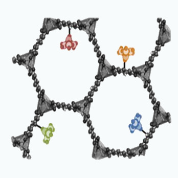

Reactivity in Confined Spaces
Porous nanomolecules and nanomaterials are highly promising in many chemical processes such as gas storage, chemical separations, and sensing (Figure 1). Computational studies on catalysis in confined spaces commonly neglect the porous environment by modeling only the active site. This approach is generally able to properly describe the reaction mechanism, but leads to a very poor description of reaction rates, yields, and product ratios. We are interested combining approaches to be able to describe the active site electronic effect and the local concentration and confinement effects on the catalytic process.
 Figure 1: Structure of a nanoporous material with multiple molecular metal oxide catalytic sites.